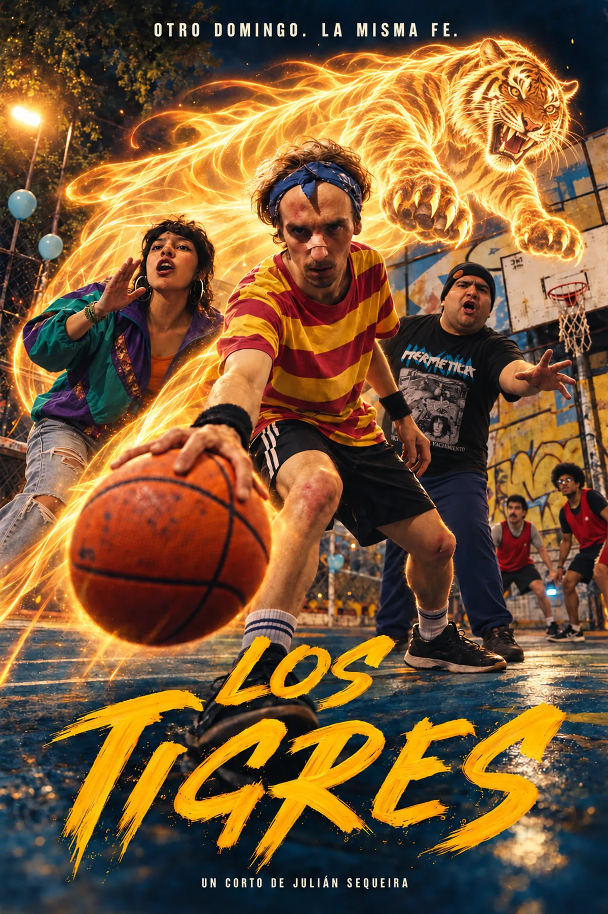
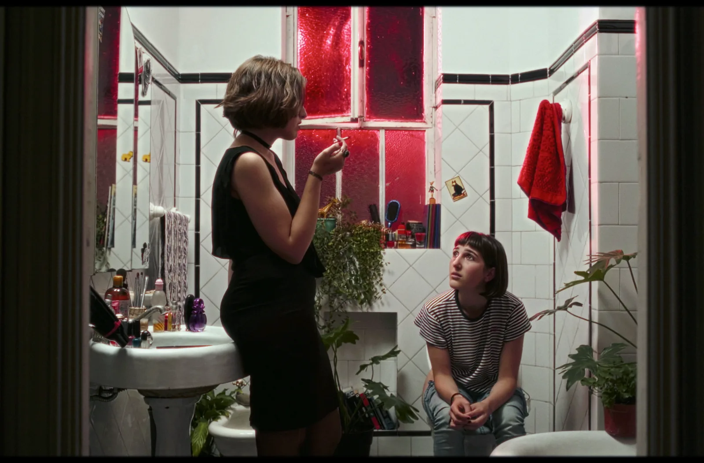

Cortometraje · Comedia fantástica · En posproducción
Los Tigres

Sinopsis
Los Tigres de San Telmo tienen poderes, una larga racha de derrotas y una promesa por cumplir: ganar el partido del cumpleaños de Felipe.
Cada domingo vuelven a la cancha con los mismos amigos y unos poderes que casi nunca funcionan. Hoy Felipe le promete a Lucía que esta vez van a ganar. Entre golpes, milagros dudosos y jugadas imposibles, las Águilas de Almagro pondrán a prueba esa promesa.
Una comedia fantástica de barrio: humor físico, poderes y épica deportiva nacidos de un partido entre amigos. La nueva versión parte del montaje y el sonido directo del cortometraje rodado, y le suma un prólogo de infancia y acciones imposibles con VFX e IA, conservando el elenco, el vestuario y la cancha del original.
Formato
Cortometraje · comedia fantástica
Rol
Dirección, guion, montaje y postproducción
Productora
Flama Collective y Bird Making Machine
Estado
En posproducción
Origen
San Telmo, Buenos Aires
Técnica
Mixed media
Fotogramas del cortometraje
Tráiler
Créditos
Equipo y elenco del cortometraje
Equipo
Julián Sequeira
Dirección y guion
Julián Sequeira
Producción ejecutiva
Sofía Molinari
Producción general
Matías Open
Asistente de dirección
Daniel Ring
Dirección de fotografía
Valentín Rougier
Foquista
Diego Colombo
Sonido directo
Juan Ceruse
Productor locador
Sofía Molinari
Arte y vestuario
Trinidad Himitian
Maquillaje FX
Priscila Perez / Octavio Zambianchi
Foto fija
Devak24
Música original
Julián Sequeira
Montaje y postproducción
Flama Collective
Productora
Bird Making Machine
Productora
Elenco · Los Tigres
Felipe Rodriguez Kees
Felipe
Franco Freijomil
Freijo
Franco Miranda
Franco
Leopoldo Davis
Leo
Lucía Ayoroa
Lu
Ekiz Tono
Facu
Elenco · Las Águilas
Seba Raffa
Seba
Darío Baez
Daro
Paulo da Silva
Paulo
Oliver Carl
Oliver
Pía Fonseca
Pía
Contacto
Siguiente proyecto
La Noche